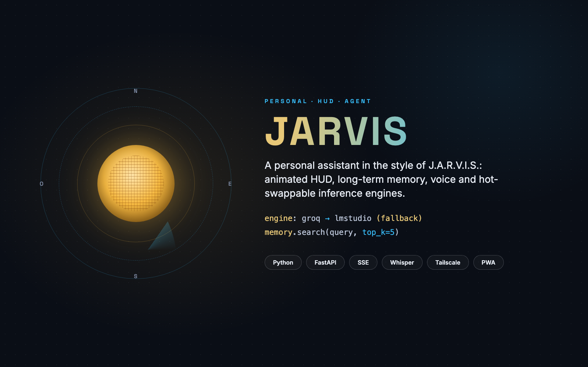
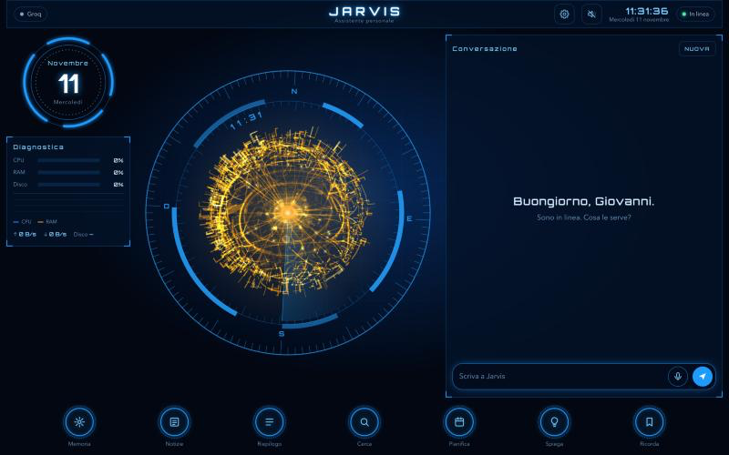

A personal assistant in the style of J.A.R.V.I.S., with an animated HUD and a voice.
A personal assistant that runs on its own Mac and is reachable from every device over Tailscale, with a web interface inspired by the J.A.R.V.I.S. HUD.
Jarvis replies in streaming from the browser or from the terminal, in a single continuous conversation, remembers durable facts by searching them semantically, reads the web without needing any API keys, and speaks with macOS's own voices. The inference engines — Groq, OpenAI, LM Studio or an agentic harness like Hermes Agent — are switched from the settings without any restart, with an automatic fallback to the local engine if the chosen one is unreachable.

A golden animated sphere sits at the center of the screen, acting as both compass and status indicator, flanked by a diagnostics panel (CPU, RAM, disk) and the ongoing conversation. Three layouts — full, sphere only, neural brain — are picked from the settings and stay saved on the device.
A FastAPI server exposes the streaming API (SSE) and serves the static interface. With a plain LLM, Jarvis runs the model → tools loop itself, reading from and writing to a SQLite store (messages, memory facts, engine profiles). With a harness like Hermes Agent instead, Jarvis only sends the persona and the last message: tools, memory and history stay with the harness, and the HUD just shows its activity. start.sh orchestrates the whole startup — it exposes the server over HTTPS with Tailscale Serve, starts LM Studio if needed, and launches the interface.
Streaming API server (SSE) and static interface, listening only on 127.0.0.1.
History, memory facts and engine profiles, editable on the fly.
Cloud and local inference engines, hot-swappable with automatic fallback.
Transcription of voice dictation on Groq.
Remote access over HTTPS from every device, without exposing the server publicly.
Installable on a phone, with a service worker that never caches /api calls.